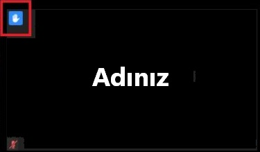
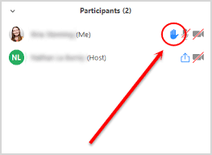
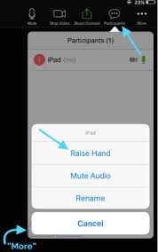
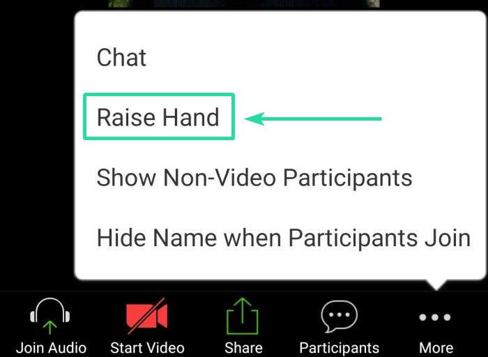
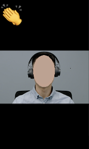

EN | TR
The Raise Hand feature lets the conductor know that you want to speak.
When you use Raise Hand, a blue hand appears in the top left corner of your video feed.

Also, your name moves near to the top of the Participants list.

Tap: Participants (top corner), then Raise Hand

See also: Things to remember about Raise Hand
Tap: More (bottom corner), then Raise Hand
It usually appears like this on iPhones:

It usually appears like this on Android (for example, Samsung):

See also: Things to remember about Raise Hand
Click: Participants (usually at the bottom), then Raise Hand (at the bottom of the window that opens)

See also: Things to remember about Raise Hand
1. If the conductor does not choose you to speak or you decide that you do not want to speak, remember to use Lower Hand. This option is in the same location as Raise Hand. If you forget to use Lower Hand the host can do this for you.
2. This is not Raise Hand:


This is the Applause feature. It does not change your position in the Participants list and it disappears after some seconds. Because of this it is recommended that you use Raise Hand and not Applause.
3. You cannot use Raise Hand if you are a host or a co-host. Therefore, in this special situation, you can try to use Applause.
If Raise Hand is not used question-and-answer discussions can be difficult to conduct. In general, conductors can only see 25 users at one time. Therefore, at meetings where there are more than 25 users the conductor possibly will not see you if you try to raise your hand in front of your camera.
Also, it is impossible for the conductor to see those who connect to the meeting with a phone or who turn off their video feed.
If Raise Hand is used a question-and-answer discussion can be conducted even if there are more than 100 users. Those who use Raise Hand are moved near to the top of the Participants list, and the conductor can see them if he monitors the Participants list.
Also, it is possible fo those who connect to the meeting with a phone or who turn off their video feed to use Raise Hand.
Last update: 2020-05-02 12:57 UTC